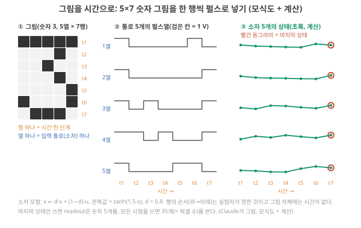
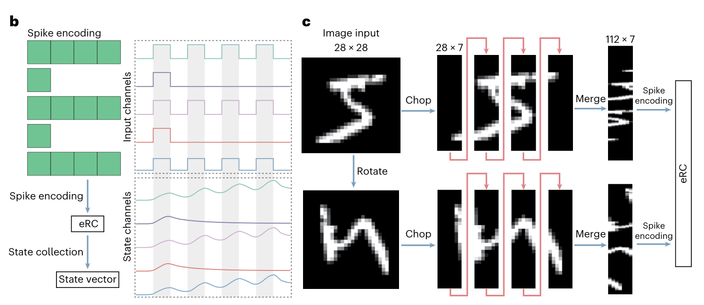
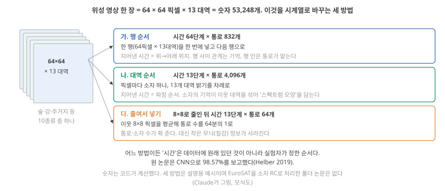
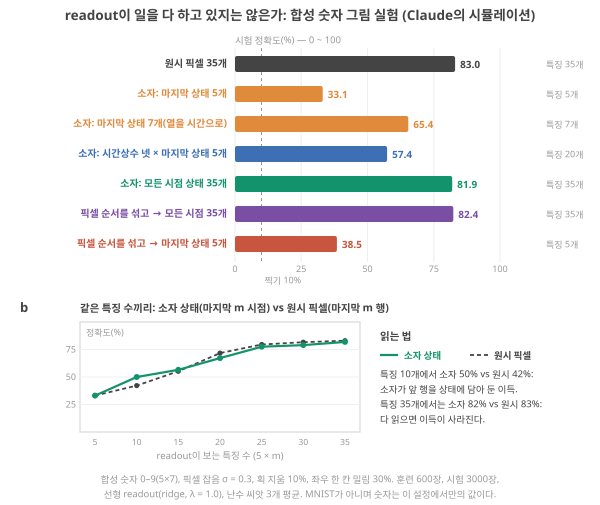
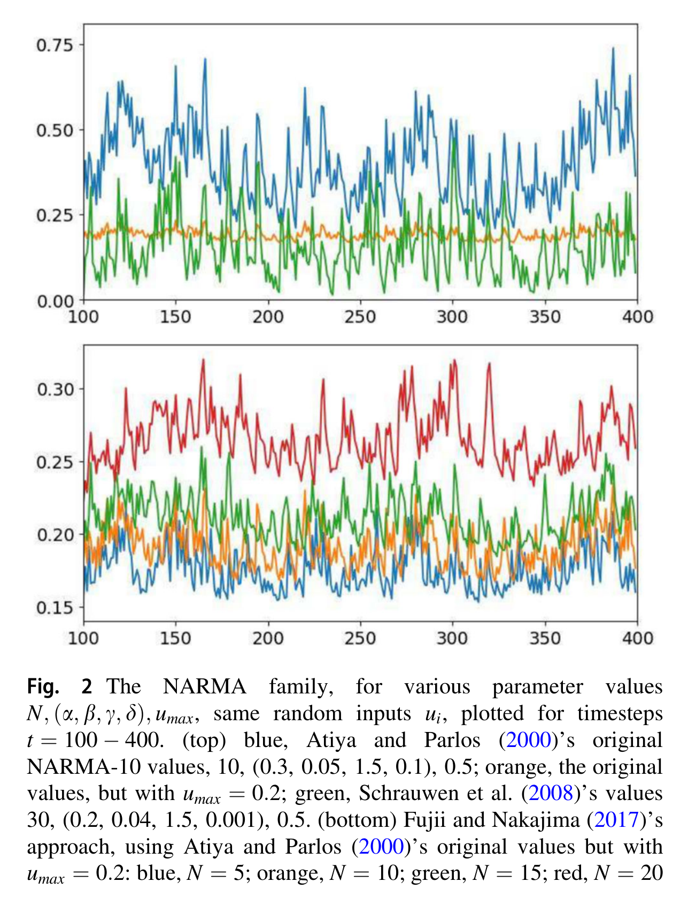
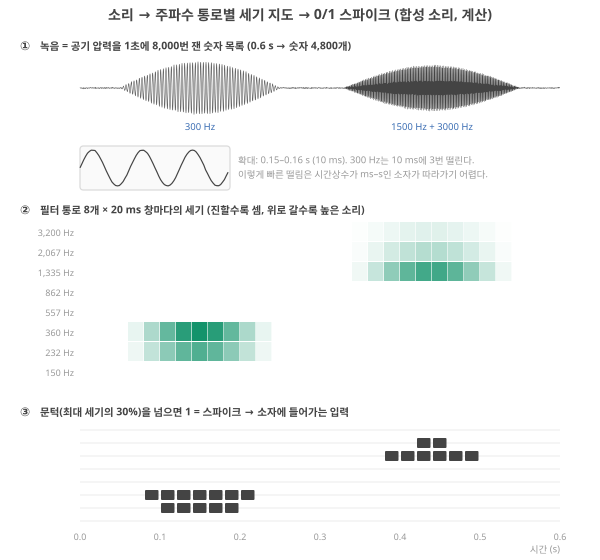
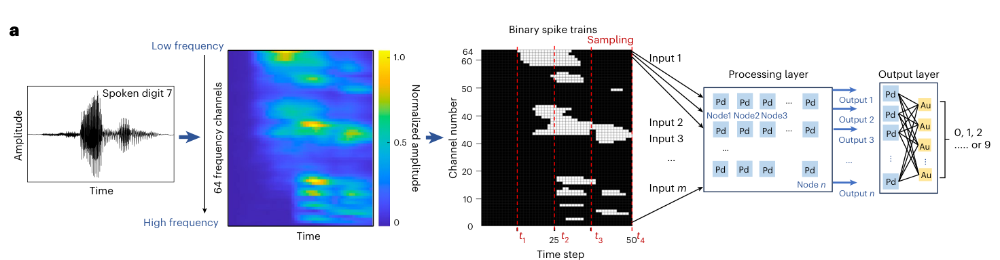
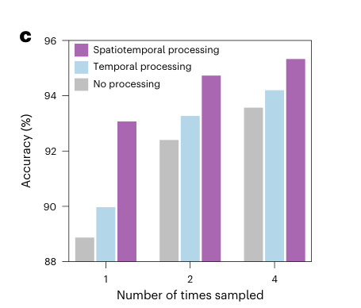
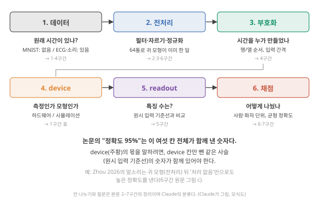

Day 28. MNIST·NARMA·spoken digit이 검증하는 것
Phase 3 · 좋은 시스템이란 무엇인가
이번 질문 세 벤치마크는 각각 무엇을 검증하고 무엇을 검증하지 못하나?
왜 배우나 (내 소재 연구와의 연결) device reservoir computing 논문의 MNIST·NARMA·spoken digit 점수가 device의 시간 처리 능력을 보여 주는지 판단합니다. 내 device로 계산 시연을 고를 때 어떤 과제가 기억·비선형을 요구하고 어떤 과제는 readout이 혼자 풀 수 있는지 구별해야 합니다.
오늘의 장면 (입력 → 내부 변화 → 출력) 입력 = 정지 영상(그림 한 장), NARMA 수식, 소리 녹음 → 내부에서 하는 일 = 그림은 한 행씩 시간 신호로 바꿔 device에 넣고, 소리는 필터 묶음으로 '높이 × 시간' 지도(cochleagram)로 바꾼 뒤 device와 readout을 통과 → 출력 = 분류 정확도 또는 NMSE, 그리고 기준선(device 없이 readout만) 점수.
오늘 반드시 그림의 '시간'은 부호화가 만든 것이고, 모든 시점을 읽으면 readout이 일을 다 할 수 있다. 그래서 MNIST 점수만으로 device의 시간 처리를 말할 수 없고 device 없는 기준선과 함께 읽어야 한다. NARMA 숫자는 정의(차수)와 delay tap 기준점과 같이 읽는다.
나중에 더 봐도 되는 것 EuroSAT 위성 영상 세 가지 변환, 다른 논문 네 편 비교, Lyon 귀 모형 구조와 MFCC. 논문 평가(Day 47–48)에서 '과제·기준선' 칸을 채울 때 다시 봅니다.
다음으로 넘어가는 기준 '오늘 반드시'를 내 말로 한두 문장 말할 수 있으면 됩니다. 나머지는 뒤의 Day에서 다시 나옵니다.
이후 쓰이는 곳 Day 29–30 기준선 비교와 공정한 비교 규칙, Day 31–32 정확도 옆의 비용, Day 47–48 논문 평가 표의 과제·기준선 칸, Day 55–56 내 device로 고를 계산 시연과 대조 실험
지난 학습 복습
지난 학습 단위(Day 27 · 벤치마크와 신호 처리 기초: 필터와 심전도)의 핵심을 다른 예로 확인합니다. 고르는 즉시 맞았는지와 이유가 보입니다. 틀려도 아래 학습자료는 그대로 열려 있고, 틀린 문제에는 다시 볼 곳이 붙습니다.
학습자료
4. 그림을 시간 신호로: 이미지 → 시계열
끝나면 할 수 있는 것. 그림이 숫자 표라는 것, 그 표를 한 행씩 펄스로 넣으면 시계열이 된다는 것, 그때 행 순서·간격·자르는 방식을 실험자가 정한다는 것, 그리고 '공간 데이터 분류'가 '시간 데이터 분류'와 무엇이 다른지 MNIST와 위성 영상(EuroSAT)으로 말할 수 있다.
왜 필요한가. device RC는 시간에 따라 상태가 변하는 계입니다. 그런데 가장 많이 쓰이는 벤치마크인 MNIST는 정지한 그림입니다. 시간이 없는 것을 시간이 필요한 device에 넣으려면 누군가 시간을 만들어 줘야 합니다. 그 과정을 알아야 ‘MNIST는 시간 과제인가’ 구간의 질문("그래서 MNIST는 시간 과제인가?")에 답할 수 있습니다.
이 단위를 읽는 길. 벤치마크 하나, MNIST를 주 경로로 끝까지 읽습니다: ‘그림 → 시간 신호’ 구간(그림을 시간으로 바꾸기) → ‘MNIST는 시간 과제인가’ 구간(작은 실험으로 readout의 몫 가르기, Lee 2025로 논문에서 확인하기, 필요한 대조 실험). ‘NARMA와 spoken digit’ 구간의 NARMA·spoken digit과 ‘성적표 읽는 법’ 구간의 성적표는 같은 질문을 다른 과제에 건 비교 자료이니, 주 경로를 마친 뒤 읽고 새 논문을 볼 때 다시 펼치면 됩니다. 심화 접기와 ‘폴더 논문의 MNIST’ 절의 접힌 논문 넷은 처음에는 건너뛰어도 됩니다.
지난 Day(‘벤치마크’·‘주파수와 필터’·‘심전도’ 구간)에서 다시 쓰는 것 두 가지. (1) 시계열은 일정한 간격으로 잰 숫자 목록이고, 1초에 몇 번 재느냐가 샘플링률입니다(샘플링). (2) leak 노드 \(x \leftarrow d\,x + (1-d)\,u\)는 입력 \(u\)가 올 때마다 상태 \(x\)를 조금씩 \(u\) 쪽으로 옮기고, \(d\)는 이전 상태가 다음 단계에 남는 비율입니다(\(d\) = 0.8이면 80%가 남음, \(d = e^{-\Delta t/\tau}\)). 이 노드는 최근 값을 크게, 오래된 값을 작게 쳐서 평균하므로 기억을 가집니다(leak 노드와 저역 통과).
기초 4: 이미지를 시계열로 바꿔 RC에 넣기, 그리고 공간 데이터 분류
그림은 숫자 표다. 흑백 사진을 아주 크게 확대하면 작은 네모(픽셀, pixel)들이 보입니다. 픽셀마다 밝기가 하나 있고, 그 밝기를 숫자로 적으면 그림 한 장은 행과 열이 있는 숫자 표가 됩니다(Day 3 기초: 벡터와 행렬의 행렬과 같은 모양). MNIST는 가로 28 × 세로 28 = 784개의 숫자로 된 표이고, 밝기는 보통 0(검정)–255(흰색)의 정수로 적힙니다 [미확인: 0–255 표기는 일반 관행]. 컬러 사진은 픽셀마다 빨강·초록·파랑 세 숫자를 가집니다.
넣기 전의 손질. 그림도 심전도처럼 다듬은 뒤 넣습니다.
- 정규화: 0–255를 0–1로 나눔(255로 나누기). device에 거는 전압 범위와 맞추기 위해서입니다.
- 잘라내기·줄이기: 가장자리의 빈칸을 잘라내거나(Singh이 정리한 한 연구는 MNIST를 22 × 20으로 잘라 썼다 Singh 2026, p.21), 이웃 픽셀을 묶어 해상도를 낮춰 숫자 개수를 줄입니다.
- 이진화(binarization): 밝기를 문턱으로 0 또는 1로 바꿈. device에는 "펄스를 건다/안 건다"로 들어갑니다. Lee 2025(npj)와 Zhong 2026이 이렇게 했습니다. Lee 2025 (npj), p.6 Zhong 2026, p.4
한 행씩 넣기(row-by-row). 가장 흔한 방법은 행 하나를 시간 한 단계로 보는 것입니다. 무엇을 볼지. 그림 6은 5열 × 7행짜리 숫자 '3' 하나가 ① 그림 → ② 통로(channel: device 하나로 들어가는 입력 줄) 다섯 개의 펄스열 → ③ device 다섯 개의 상태로 바뀌는 모습입니다. ①의 맨 윗줄(t1)이 ②에서 가장 왼쪽 시간 칸이 되는 것을 먼저 확인하세요.

아래 단계는 그림 6을 왼쪽에서 오른쪽으로 따라갑니다.
단계 1. 열 다섯 개마다 device를 하나씩 둡니다(통로 5개).
단계 2. 시간 1에는 맨 윗줄을, 시간 2에는 둘째 줄을, … 시간 7에는 맨 아랫줄을 넣습니다. 칸이 검으면 그 통로에 펄스(예: 1 V)를 걸고, 희면 걸지 않습니다.
단계 3. device는 기억이 있으므로, 시간 7의 상태에는 맨 아랫줄뿐 아니라 그 위 줄들의 흔적이 (오래된 것일수록 흐리게) 남아 있습니다. 숫자로 따라가 봅니다. 1열의 칸은 위에서부터 검·흰·흰·흰·흰·검·흰, 즉 입력 1, 0, 0, 0, 0, 1, 0입니다. 상태를 leak 노드 \(x \leftarrow 0.8\,x + 0.2\,u\)(남는 비율 \(d\) = 0.8, 처음 0)로 계산하면 0.2 → 0.16 → 0.128 → 0.102 → 0.082 → 0.266 → 0.212. t6의 펄스가 상태를 올렸고(0.082 → 0.266), t1 펄스의 흔적(0.2 × 0.8⁶ ≈ 0.05)도 마지막 값 0.212 안에 섞여 있습니다.
5열(1, 0, 0, 0, 1, 1, 0)은 같은 계산으로 마지막이 0.340이 되어 1열과 구별됩니다. (그림 6은 이 상태에 측정의 비선형 \(\tanh(1.5x)\)를 씌워 그렸습니다.)
단계 4. 마지막 상태 5개(또는 모든 시점의 상태 35개)를 readout에 줍니다. 마지막 상태만 쓰면 '언제' 펄스가 왔는지가 흐려집니다. 1열의 둘째 펄스가 t6이 아니라 t5에 왔다면 마지막 값은 0.2 × 0.8⁶ + 0.2 × 0.8² = 0.180으로, 0.212와 0.03밖에 다르지 않습니다. ‘MNIST는 시간 과제인가’ 구간 실험에서 마지막 상태만 쓴 경우가 크게 떨어지는 이유가 이것입니다.
MNIST라면 28행이므로 통로 28개 × 28단계가 됩니다. 픽셀 784개를 통로 하나에 줄줄이 넣으면 784단계입니다. 입력 간격을 1 ms로 잡으면 앞쪽은 28 ms, 뒤쪽은 784 ms가 걸립니다. 어느 쪽을 택할지, 간격을 몇 ms로 할지는 그림이 아니라 실험자가 정합니다.
기억이 모자라면 그림을 접는다. 28단계는 device가 기억하기에 깁니다. Liang 리뷰는 손글씨 숫자처럼 정보가 많은 그림은 보통 그림을 잘게 잘라(chop) 이어 붙여(merge) 통로 수를 늘리고 각 입력열을 짧게 만들어 기억 용량(MC) 부족을 피한다고 씁니다(MC는 과거 입력을 지금 상태에서 얼마나 되살릴 수 있는지의 총량, Day 21 기초). 같은 그림을 돌려서(rotate) 다른 입력 지도를 하나 더 만들기도 합니다. Liang 2024, p.198 원문 Fig. 4c에서 28 × 28 그림은 28 × 7 조각 넷으로 잘려 112 × 7로 이어 붙여집니다.
즉 통로 112개 × 7단계입니다. device의 기억에 맞춰 과제 쪽을 바꾼 것입니다. (Day 23 기초의 말로 하면, device가 기억할 수 있는 지연의 범위 안으로 과제를 접어 넣은 것.)

다른 방식들. device 하나를 시간으로 쪼개 여러 노드처럼 쓰는 time multiplexing(Day 18 기초: time multiplexing: 입력 하나가 머무는 시간을 여러 칸으로 나눠 칸마다 마스크를 곱해 넣고, 칸마다의 응답을 'virtual node'로 읽는 방법)도 그림에 씁니다. 사건 카메라(밝기가 변한 픽셀만 그 순간 신호를 내는 카메라)로 찍은 N-MNIST는 그림 한 장이 네 장의 시간 프레임으로 되어 있어, 픽셀마다 4칸짜리 0/1 목록이 생기고 이것이 device 하나에 펄스 넷으로 들어갑니다(784픽셀 → device 상태 784개). Lee 2025 (npj), p.6
공간 데이터 분류란. 정보가 어디에 있느냐(배치)에 담긴 데이터를 가르는 일입니다. 숫자 그림은 획이 어느 칸에 있느냐가 정보이고, 위성 사진은 어떤 색·질감이 어디에 펼쳐져 있느냐가 정보입니다. 반대로 심전도나 말소리는 언제 무엇이 왔느냐(순서와 간격)가 정보입니다. 예로 EuroSAT은 유럽 위성(Sentinel-2)이 찍은 지표 영상 27,000장을 숲·강·주거지 같은 10개 토지 이용 종류로 나눈 데이터이고, 픽셀마다 사람 눈의 세 색보다 많은 13개 파장 대역의 밝기가 있습니다. Helber 2019 빛도 파장마다 세기가 다르고, 파장마다의 밝기를 늘어놓은 것이 빛의 스펙트럼입니다.
Day 27–28의 ‘주파수와 필터’ 구간에서 전기 신호의 스펙트럼이 '주파수마다의 진폭'이었던 것과 같은 생각이고, 13개 대역은 그 스펙트럼을 13개 구간으로 나눠 잰 값입니다. 폴더의 RC 논문 중 EuroSAT을 쓴 것은 없습니다. EuroSAT 원 논문은 폴더 밖: 서지·초록·데이터 설명을 웹에서 확인
심화 · 위성 영상(EuroSAT) 한 장을 시계열로 바꾸는 세 방법과 비교 상대
EuroSAT 한 장을 숫자로 보면. 원 논문에 따르면 영상 조각 하나는 64 × 64 픽셀이고 Helber 2019, 픽셀마다 13개 대역의 밝기가 있으니 한 장은 64 × 64 × 13 = 53,248개의 숫자입니다. MNIST 한 장(28 × 28 = 784개)의 약 68배입니다. 그런데 이 숫자들에는 시간 순서가 없습니다. 위성은 한 순간에 찍었고, 정보는 "어느 위치에 어떤 파장이 얼마나 밝은가"에 있습니다. 그래서 device RC에 넣으려면 MNIST처럼 시간을 지어내야 합니다. 대표적인 방법이 셋입니다. 해석
- 가. 행 순서: 한 행(64픽셀 × 13대역 = 832개 숫자)을 한 번에 832개 통로로 넣고, 64행을 64단계에 걸쳐 차례로 넣습니다. 지어낸 시간은 '위에서 아래로의 위치'이고, device의 기억은 윗줄과 아랫줄의 관계를 담습니다.
- 나. 대역 순서: 픽셀마다 device 하나를 두고, 그 픽셀의 13개 대역 밝기를 13단계에 걸쳐 펄스로 넣습니다(4,096개 device × 13단계). 지어낸 시간은 '파장의 순서'이고, device가 앞 대역을 조금 기억한 채 다음 대역을 받으므로 스펙트럼의 모양(예: 식물은 근적외선에서 유난히 밝다)이 device 상태에 섞여 들어갑니다. 위의 N-MNIST가 픽셀마다 시간 프레임 넷을 넣은 것과 같은 구조입니다.
- 다. 줄여서 넣기: 이웃한 8 × 8 픽셀을 평균해 64 × 64를 8 × 8로 줄인 뒤 나처럼 넣으면 device 64개 × 13단계로 끝납니다. 통로와 device가 64분의 1로 줄지만, 밭의 이랑이나 건물의 격자 같은 작은 무늬(질감) 정보가 사라집니다.

무엇과 비교해야 하나. 원 논문은 합성곱 신경망(CNN: 이웃 픽셀 무늬를 찾는 필터를 여러 층 쌓은 신경망)으로 98.57%를 보고했습니다. Helber 2019 그러니 device RC로 EuroSAT을 푼다는 논문이 나온다면 "정확도가 높다"만으로는 부족하고, ① 같은 부호화를 device 없이 컴퓨터로 돌린 기준선(Day 29–30)보다 나은지, ② CNN과의 정확도 차이를 감수할 만큼 시스템 비용(Day 31–32)이 싼지를 물어야 합니다. 이 데이터에서 device 처리가 의미를 가질 수 있는 자리는, 예를 들어 위성이나 드론 안에서 영상을 바로 줄여 보내야 할 때처럼 보내는 데이터 양이 병목인 곳입니다. 해석 가설
28 × 28 그림을 한 행씩 넣으면 통로 몇 개 × 몇 단계일까요? Liang 그림의 112 × 7로 바꾸면 한 통로의 입력열 길이는 몇 분의 일로 줄어드나요? 계산해 두고 아래에서 확인하세요.
- 픽셀 / 정규화 / 이진화
- 그림의 작은 칸 하나와 그 밝기 숫자 / 0–255를 0–1로 / 문턱으로 0·1로.
- Row-by-row 입력
- 행 하나 = 시간 한 단계, 열 하나 = 통로 하나. 28 × 28이면 28통로 × 28단계.
- Chop·merge·rotate
- 그림을 잘라 이어 붙여 통로를 늘리고 입력열을 짧게 / 돌려서 한 벌 더. 기억 부족을 피하는 전처리 Liang 2024, p.198.
- 공간 데이터 분류
- 정보가 '어디에'(배치)에 있는 데이터를 가르기. 예: 숫자 그림, 위성 영상(EuroSAT). 시간 순서는 부호화가 만든다.
- 그림 = 숫자 표. 정규화·잘라내기·이진화 뒤 한 행씩 펄스로 넣으면 시계열이 된다. 28 × 28 → 28통로 × 28단계(또는 1통로 × 784단계).
- 행 순서·입력 간격·자르는 방식은 실험자가 정한다. 기억이 모자라면 그림을 잘라 이어 붙여(112 × 7) 과제를 device에 맞춘다 Liang 2024, p.198–199.
- 공간 데이터(그림, 위성 영상)는 '어디에'가 정보이고, 시간은 부호화가 지어낸다 해석.
- 남은 질문: 그렇게 지어낸 시간을 device가 처리한 결과는, device 없이 readout만 쓴 결과보다 나은가? → ‘MNIST는 시간 과제인가’ 구간.
5. device RC의 MNIST는 시간 과제인가, readout이 일을 다 하나
끝나면 할 수 있는 것. 작은 시뮬레이션의 숫자로 "모든 시점의 상태를 다 읽으면 device가 하는 일은 거의 없고 readout이 그림을 직접 보는 것과 같다", "결과가 행 순서 같은 임의의 선택에 크게 흔들린다", "device의 기억은 같은 특징 수에서만 이득으로 드러난다"를 설명하고, 논문에서 이것을 확인하는 대조 실험을 말할 수 있다.
왜 필요한가. ‘그림 → 시간 신호’ 구간에서 본 대로 MNIST의 시간은 실험자가 만든 것입니다. 그렇다면 두 가지를 의심해야 합니다. (1) device가 처리한 '시간'은 그림의 내용과 무관한 임의의 순서가 아닌가? (2) readout(상태에서 답을 꺼내는 마지막 단계)이 사실상 그림을 직접 보고 있는 것 아닌가? Day 10 증거 사다리의 5단(기준선 비교)을 MNIST에 그대로 거는 것입니다. 결정적인 질문은 "device가 readout·기준선 이상으로 무엇을 더하나?"이고, 답은 device·과제·읽는 방식에 따라 달라서 미리 정할 수 없습니다. 짧게 다시 말하면: readout은 상태 숫자들에 weight를 곱해 더하는 학습된 직선이고(Day 10 기초 3, 분류에서는 클래스마다 점수를 내 가장 큰 것을 고릅니다 — Day 14 기초: softmax), 기준선은 "device를 빼고 같은 readout을 돌렸을 때"의 성적입니다(Day 10 기초 4).
5-1. 작은 실험: 합성 숫자 그림으로 직접 해 보기
진짜 MNIST 대신, Claude가 5 × 7 크기의 숫자 그림(0–9)을 만들고 잡음을 섞어 실험했습니다. 이것은 MNIST가 아니며, 숫자는 이 설정에서만의 값입니다. 설정은 이렇습니다.
- 데이터: 숫자마다 학습 60장·시험 300장(합 600장·3,000장). 픽셀마다 잡음(표준편차 0.3)을 더하고, 획의 픽셀을 10% 확률로 지우고, 30% 확률로 좌우 한 칸 밀었다.
- device: 통로마다 leak 노드 하나. \(x \leftarrow 0.8\,x + 0.2\,u\), 관측값 \(= \tanh(1.5x) +\) 작은 측정 잡음. 숫자 그림을 한 행씩 시간 순서로 넣는(row-by-row) 입력, 앞의 그림 6과 같은 방식.
- Readout: 모든 경우에 같은 선형 readout(ridge 회귀, Day 13 기초: ridge — 오차 제곱합에 weight 크기에 대한 벌점을 더해 한 번에 푸는 직선 맞추기). 시험 정확도는 난수 씨앗(seed: 같은 번호면 같은 난수가 나와 결과를 재현할 수 있는 번호, Day 21) 3개로 데이터와 잡음을 바꿔 가며 잰 값의 평균.
무엇을 볼지. 그림 8(a)의 막대 일곱 개는 같은 그림 데이터를 서로 다른 방식으로 readout에 준 결과이고, 오른쪽 회색 글씨가 readout이 받은 숫자의 개수(특징(feature) 수)입니다. 먼저 맨 위 검정(원시 픽셀)과 초록(device의 모든 시점) 막대의 길이를 비교해 보세요. 그림 8(b)는 특징 수를 맞춰 비교한 곡선이고, 아래 결과 읽기의 마지막 항목(같은 특징 수끼리 비교)에서 읽습니다.

결과를 하나씩 읽습니다.
① 원시 픽셀 35개 + readout: 83.0%. device 없이 그림의 숫자 35개를 바로 readout에 줬습니다. 이것이 기준선입니다. 찍기(10%)보다 훨씬 높습니다. 그림 과제에서는 선형 readout만으로도 꽤 맞힌다는 것이 출발점입니다. 진짜 MNIST에서도 픽셀을 바로 쓰는 단순 선형 분류기가 시험 오차 12.0%(정확도 약 88%), 기울기 보정(deskewing) 뒤 8.4%(약 92%)를 냅니다(LeCun et al. 1998의 결과 모음). 확인 Proc. IEEE 86, 2278의 결과를 모은 MNIST 공개 페이지를 검색 결과로 대조, 1998년 원문 표는 보지 못함 다만 이 분류기가 위 실험의 ridge readout과 똑같지는 않습니다.
② device의 모든 시점 상태 35개: 81.9%. 7단계 × 5통로의 상태를 전부 readout에 주면 원시 픽셀 기준선(83.0%)과 거의 같습니다(조금 낮은 것은 포화 — \(\tanh\)가 큰 값에서 납작해져 입력의 차이가 상태의 차이로 덜 옮겨지는 것, Day 25 기초 — 와 측정 잡음 때문). 각 시점의 상태는 "지금 행 + 앞 행들의 흔적"이라, 35개를 다 보면 readout이 픽셀 35개를 되살릴 수 있습니다. device는 정보를 섞었을 뿐 더하지 않았고, 가르는 일은 readout이 했습니다.
③ 픽셀 순서를 섞고 모든 시점 35개: 82.4%. 35개 픽셀의 순서를 아무렇게나(하지만 모든 그림에 똑같이) 섞은 뒤 같은 방식으로 넣어도 결과가 같습니다. 즉 device가 처리한 '시간 순서'는 그림의 내용과 아무 상관이 없어도 됩니다. 이 읽기 방식에서 '시간'은 아무 일도 하지 않습니다. 그림에 원래 시간이 없다는 ‘그림 → 시간 신호’ 구간의 말과 맞는 결과입니다. 다만 순서를 섞어도 같은 이유의 절반은 '모든 시점을 다 읽었기' 때문이어서(readout이 섞인 순서까지 함께 배운다), 진짜 시간 신호라도 이렇게 읽으면 비슷한 결과가 나올 수 있습니다. 해석
④ 마지막 상태 5개만: 33.1%. 이번에는 readout에 마지막 상태 5개만 줍니다(진짜 device 시스템에서 흔한 방식: 읽는 횟수와 readout 크기를 줄이려고). 앞 행의 정보가 흐린 흔적으로만 남아 크게 떨어집니다. device의 남는 비율 \(d\)를 0.05에서 0.97까지 바꿔도 30–33%에 머뭅니다(계산 결과).
⑤ 임의의 선택이 결과를 흔든다. 같은 그림을 열을 시간으로 넣으면(통로 7개 × 5단계) 마지막 상태 7개로 65.4%. 픽셀 순서를 섞고 마지막 상태 5개면 38.5%. 시간상수가 다른 노드 넷을 통로마다 두면(마지막 상태 20개) 57.4%. 그림은 그대로인데 실험자가 고른 넣는 방식에 따라 33%에서 65%까지 움직입니다.
⑥ 같은 특징 수끼리 비교하면 device의 몫이 보인다. 그림 8(b). 특징 10개(마지막 두 시점 상태 vs 마지막 두 행 픽셀)에서 device 50.0% vs 원시 42.2%. device 상태에는 그보다 앞 행의 흔적도 들어 있기 때문입니다. 그러나 특징이 늘수록 차이가 사라지고, 20개부터는 오히려 원시 픽셀이 조금 높습니다(35개에서 81.9% vs 83.0%). device의 기억은 'readout을 작게 만드는 압축'으로서만 이득을 냈습니다.
이 실험에서 일반화할 수 있는 것과 없는 것. device 모형이 아주 단순하고(통로끼리 섞이지 않는 leak 노드), 그림도 작습니다. 더 풍부한 비선형·통로 간 결합이 있는 device라면 '모든 시점 상태'가 원시 픽셀 기준선을 넘을 수 있습니다. 그러니 이 실험은 "device RC는 MNIST에 쓸모없다"를 보이지 않습니다. 보이는 것은 어떤 결과든 원시 입력 기준선과 특징 수를 함께 보지 않으면 device의 몫을 알 수 없다는 것입니다. 해석
5-2. 폴더의 논문들은 어떻게 했나
원시 입력 기준선을 직접 적은 Lee 2025(npj) 하나를 끝까지 읽습니다. 다른 논문 넷은 같은 질문을 다른 모습으로 보여 주는 비교 자료라 아래에 접어 두었습니다.
Lee 2025(npj): 저자 스스로 정지 그림의 한계를 적고, 원시 입력 기준선을 보였다. 저자들은 정지 이미지 데이터셋이 비동기적으로, 여러 시간척도로 데이터가 생기는 현실을 담지 못한다며 N-MNIST를 골랐다고 씁니다. Lee 2025 (npj), p.6 그리고 원시 네 프레임을 그대로 readout에 넣은 소프트웨어 기준선 91.32%(readout 3136 × 10)와 device 90.01%(readout 2352 × 10)를 나란히 적습니다. Lee 2025 (npj), p.8 위 합성 숫자 실험의 '같은 특징 수끼리 비교'와 같은 구조입니다. 정확도는 기준선이 조금 높고, device의 의미는 readout 크기를 줄인 데 있습니다.
Lee 2025의 같은 그림(Fig. 6)에서 앞서 a(데이터 간격과 정확도)만 보았는데, 이번에는 점선과 c를 중심으로 다시 봅니다. 읽는 법: a의 맨 위 점선이 원시 입력 기준선, c는 device 여러 개를 묶어 한 번에 읽어 readout을 줄였을 때의 정확도입니다.

비교 자료 · 다른 논문 넷: 시뮬레이션(Zhong 2026), 앞단 특징 추출(Pei 2026), 특징 수(Lee 2026), 처리 없음 기준선(Zhou 2026)
Zhong 2026: 높은 점수, 그러나 시뮬레이션. 양극성 트랜지스터로 만든 물리 ESN(내부는 고정하고 출력층만 학습하는 순환 신경망의 물리판, Day 12)이 MNIST에서 정적 모드 95.27%, 동적 응답을 쓴 모드 96.98%를 냈다고 씁니다. Zhong 2026, p.2 동적 모드는 MNIST를 이진화하고 4-bit 부호화(펄스 간격을 달리 해서)로 넣었습니다. Zhong 2026, p.4 Methods는 MNIST·Fashion·Lorenz 등의 과제가 Python + PyTorch 시뮬레이션(측정에서 얻은 동작 모형 사용)으로 구현됐다고 적습니다. Zhong 2026, p.8 원시 픽셀 + 같은 readout의 기준선 숫자는 이 쪽들에서 찾지 못했습니다.
Pei 2026: 특징 추출이 먼저 일을 한다. 아홉 가지 벤치마크에서 모두 90% 넘는 정확도를 "시뮬레이션으로" 얻었다고 씁니다. Pei 2026, p.1200 MNIST는 90.63%인데, 원 데이터를 먼저 특징 추출(Gabor 필터를 그림 전체에 훑어 거는 계산)과 마스킹으로 처리한 뒤 device 입력 전압으로 바꿨습니다. Pei 2026, Extended Data Fig. 4j Gabor 필터는 그림에서 특정 방향의 선(가장자리)을 찾아내는 영상 처리 계산입니다 [미확인: 일반 지식]. Day 27–28의 ‘주파수와 필터’ 구간의 필터처럼, device 앞에서 이미 중요한 일을 한 셈입니다. 해석
Lee 2026(ACS Nano): 특징을 두 배로 늘리며 올라간 점수. conductance(여기서는 device 하나에 전류가 얼마나 잘 흐르나, 즉 컨덕턴스 \(G\) [S]. 재료 성질인 이온전도도 σ [S/m]와 다른 말. Day 2 crossbar에서 본 \(G\)와 같은 뜻)만 쓴 64개 특징으로 82.3%, conductance + 밝기를 함께 쓴 128개 특징으로 93.5%(저자들은 '검증 정확도'로 보고). Lee 2026 (ACS Nano), p.19469 두 종류의 출력을 쓴 효과와 특징 수가 두 배가 된 효과가 이 비교에서는 함께 움직입니다. 특징 수를 맞춘 비교(예: conductance 128개)가 있어야 둘을 가를 수 있습니다. 해석
Zhou 2026(Nat. Nanotech.): 기준선을 둔 예. 말소리 숫자에서 "처리층 없음(원시 입력을 바로 회귀)", "시간만 처리", "시공간 처리" 셋을 비교해 시공간 처리가 95.3%로 가장 높았고, 발작 조기 검출에서도 85% vs 처리 없음 58% vs 시간만 67%였습니다. Zhou 2026 (Nat. Nanotech.), p.586 기준선이 있다는 점에서 좋은 예입니다. 다만 이것도 대규모 신경망 시뮬레이션이고 Zhou 2026 (Nat. Nanotech.), p.584, 에너지 값은 device 동작만 센 것으로 readout·전단부 회로는 빠져 있다고 저자들이 적습니다. Zhou 2026 (Nat. Nanotech.), p.586
정리: 확인할 대조 실험. Singh은 과제 성능만으로는 어느 부분이 유용한 변환을 했는지 알 수 없다며, 같은 readout으로 (1) 입력 자체(또는 원시 센서 출력), (2) 이력에 의존하지 않는 device 응답(완전히 회복시킨 뒤 재거나 정상 상태 전달 곡선으로), (3) 실제 동적 reservoir를 비교하고, 특징 수가 다르면 특징 수에 따른 성능 곡선으로 보이라고 권합니다. 이 비교는 성능을 부품별로 정확히 나누는 것이 아니라 "다른 부분을 고정했을 때도 주장한 개선이 남는지" 보는 진단이라고 덧붙입니다. Singh 2026, p.18 앞의 합성 숫자 실험에서 원시 픽셀 막대와 device의 모든 시점 막대의 비교가 (1)과 (3)의 비교이고, 특징 수를 맞춘 곡선(그림 8(b))이 특징 수 곡선입니다.
"device RC로 MNIST 95%를 냈으니 device가 계산을 잘한다" — 같은 readout에 원시 픽셀을 넣어도 높은 점수가 나오는 과제이고(단순 선형 분류기 약 88–92%, 위 ‘합성 숫자 실험’ 절의 원시 픽셀 기준선), 시간 순서는 실험자가 지어낸 것입니다. 원시 입력 기준선, 특징 수, 특징 추출 같은 앞단 처리, 하드웨어인지 시뮬레이션인지를 함께 봐야 device의 몫을 말할 수 있습니다.
내 device로 그림 과제를 시연한다면, device의 기여를 보이기 위해 어떤 세 가지 결과를 나란히 놓겠습니까? (힌트: 원시 입력, 기억을 없앤 device, 실제 device — 모두 같은 readout과 같은 특징 수로.) 그리고 그 세 숫자가 거의 같다면, 그때 내 device의 가치는 정확도 말고 어디에서 찾겠습니까?
생각 정리 보기
- 같은 readout·같은 특징 수로 세 결과를 나란히 놓습니다: (1) 원시 입력만(device 없음), (2) 기억을 없앤 device(완전히 회복시킨 뒤 읽거나 정상 상태 응답만 사용), (3) 실제 device.
- 예시 해석: (1) 83%, (2) 80%, (3) 82%처럼 거의 같으면, 이 과제의 정확도는 device의 시간 응답 덕분이라고 말할 수 없습니다.
- 그때 device의 가치는 정확도 밖에서 찾습니다: 같은 정확도를 더 적은 특징 수(작은 readout)로 냈나, 에너지·면적·읽기 횟수가 적은가.
- 반대로 (3)이 (2)보다 같은 특징 수에서 분명히 높으면 소재의 기억이 기여했다는 증거가 됩니다.
- 그림 과제의 '시간'은 부호화가 만든다. 픽셀 순서를 섞어도 모든 시점 상태를 읽으면 결과가 같다(82.4% vs 81.9%, 합성 데이터, Claude 계산) — 이 읽기 방식에서 시간 순서는 아무 일도 하지 않는다.
- 모든 시점 상태를 다 읽으면 readout이 그림을 직접 보는 것과 같다(81.9% vs 원시 83.0%, 합성 데이터, Claude 계산). device의 기억은 같은 특징 수에서만 이득으로 보였다(특징 10개: 50.0% vs 42.2%).
- 넣는 방식 같은 임의의 선택이 결과를 33–65%로 흔든다(합성 데이터, Claude 계산). 폴더의 MNIST 결과는 시뮬레이션이 많고 Zhong 2026, p.8 Pei 2026, p.1200, 원시 입력 기준선이 있는 예에서 device는 기준선과 비슷하거나 낮았다 Lee 2025 (npj), p.8.
- 확인할 것: 원시 입력·정적 device·동적 device를 같은 readout으로, 특징 수 곡선으로 Singh 2026, p.18.
6. NARMA와 spoken digit: 무엇을 검증하고 무엇을 못 하나
끝나면 할 수 있는 것. NARMA 오차(NMSE) 하나를 "선형 delay tap으로도 얼마가 나오나"라는 기준점과 함께 읽고, NARMA의 정의가 논문마다 다를 수 있다는 점을 확인하며, 소리가 필터 묶음(filter bank)을 거쳐 '통로별 세기 지도'(cochleagram)가 되는 과정을 따라가고, spoken digit 결과에서 그 전처리와 화자(speaker) 나누기를 확인할 수 있다.
이 구간의 자리: 비교 자료. ‘MNIST는 시간 과제인가’ 구간에서 MNIST로 끝까지 물은 질문(점수 가운데 device의 몫은 얼마이고, 무엇과 비교해야 보이나)을 원래 시간이 있는 두 과제에 그대로 겁니다. 새 개념은 둘뿐입니다: NARMA 숫자를 읽는 기준점(‘NARMA’ 절)과, 소리가 device에 닿기 전에 거치는 필터 묶음(‘spoken digit’ 절 기초 상자의 네 단계). 나머지는 같은 점검 목록을 과제에 맞게 바꾼 것입니다.
6-1. NARMA: 기억과 곱셈을 한꺼번에 묻는 시험
짧은 복습. NARMA10은 0과 0.5 사이의 무작위 입력 \(u(t)\)를 넣으면 정해진 공식이 정답 \(y(t)\)를 만드는 과제입니다(뒤의 숫자 N = 10은 공식이 몇 단계 전까지를 쓰는지, 즉 요구하는 기억의 길이). 공식 안에 "지금 출력 × 지난 10개 출력의 합"과 "10단계 전 입력 × 지금 입력"이라는 곱이 있어서, 맞히려면 약 10단계의 기억과 곱셈(비선형)이 함께 필요합니다. 공식과 계산은 Day 21 기초: NARMA에서 직접 돌려 봅니다. 오차는 NMSE로 잽니다(1이면 평균값만 말하는 수준, 0이면 완벽, Day 21 기초: NMSE).
무엇을 검증하나. Stepney는 NARMA가 아마 RC 문헌에서 가장 흔한 벤치마크이며, 같은 입력을 받은 열린 동적 시스템의 출력을 흉내 내는 과제라고 씁니다. Stepney 2024, p.676 기억(10단계)과 2차 비선형(곱)을 하나의 숫자로 함께 묻는다는 것이 장점입니다.
무엇을 검증하지 못하나: 정의가 하나가 아니다. 같은 튜토리얼이 바로 이어서 문제를 셋 적습니다. Stepney 2024, p.676–677
- 발산. 표준 NARMA10 설정도 가끔 값이 무한히 커지며(발산), N을 바꾸면 더 쉽게 발산한다.
- 매개변수가 제각각. 발산을 막으려고 논문마다 다른 매개변수, 다른 입력 범위(0–0.5 대신 0–0.2), tanh 씌우기 등을 썼다.
- 출력 범위가 다르다. 원래 NARMA10의 출력은 대략 0.15–1, 입력 범위를 줄인 판은 0.15–0.25. N에 따라서도 범위가 달라져 "N에 따른 성능"을 비교하기 어렵다.
그래서 Stepney는 NARMA를 벤치마크로 쓸 때 조심하라고 하고, 같은 성질(비선형 기억)을 더 해석하기 쉽게 재는 information processing capacity(IPC: 과거 입력의 1차·2차·3차 … 함수를 상태에서 얼마나 되살리는지를 차수별로 나눠 재는 지표, Day 19 기초)을 권합니다. Stepney 2024, p.677 논문에서 NARMA 숫자를 보면 어떤 매개변수·입력 범위의 NARMA인지부터 확인해야 합니다. 예로 Singh이 정리한 한 MNIST 연구는 NARMA2를 썼는데 Singh 2026, p.21, 이름 그대로 2단계 기억만 요구하는 판이라 NARMA10의 숫자와 나란히 놓을 수 없습니다. 해석

기준점 숫자: NMSE 0.3은 좋은가? 숫자 하나만으로는 모릅니다. 비교할 눈금이 필요합니다. Claude가 원래 NARMA10(매개변수 0.3, 0.05, 1.5, 0.1, 입력 0–0.5)을 만들어 device 없이 지난 입력 몇 개를 그대로 선형 회귀에 넣어 봤습니다(Day 21 기초: delay tap 기준선의 방법). 학습 2,800단계, 시험 999단계입니다.
- 늘 평균값만 말하기: NMSE = 1 (정의상).
- 지금 입력 하나만 쓰는 선형 회귀: NMSE ≈ 0.69.
- 지난 입력 10개(delay tap 10개): NMSE ≈ 0.30.
- 지난 입력 20개: NMSE ≈ 0.15. (곱셈이 전혀 없는 직선인데도.)
- 모두 Claude의 계산(순수 Python, 난수 씨앗 21 하나)이며 설정을 바꾸면 달라진다. 같은 설정에서 난수 씨앗만 1–20으로 바꿔 다시 계산하면 입력 하나 ≈ 0.70–0.88(가운데 값 약 0.76), 10개 ≈ 0.30–0.53(약 0.34), 20개 ≈ 0.15–0.32(약 0.16)이라, 위 숫자는 그 범위의 낮은 쪽이다. 기준점은 씨앗 하나가 아니라 범위로 읽는다.
즉 이 설정에서 device가 NMSE 0.3을 냈다면 "지난 입력 10개를 저장해 직선을 맞춘 것"과 같은 수준이고, 0.15보다 낮아야 "delay tap 20개짜리 직선"보다 나은 것입니다. 해석 어떤 기준선과 비교해야 하는지는 Day 29–30의 주제입니다.
6-2. Spoken digit: 진짜 시간 과제, 그러나 앞단이 크다
무엇인가. 사람들이 0부터 9까지의 숫자를 말한 녹음입니다. Stepney는 TI-46 말소리 데이터의 숫자 부분을 대표적인 분류 벤치마크로 듭니다. Stepney 2024, p.676 폴더에는 다른 판도 나옵니다: 화자 6명의 Free Spoken Digit Dataset Singh 2026, p.22, AudioMNIST Zhou 2026 (Nat. Nanotech.), p.584. 소리는 MNIST와 달리 원래 시간이 있는 신호입니다. 한 단어가 약 1초 안팎이고, 그 안에서 소리의 높낮이가 시간에 따라 변하는 모양이 숫자를 가릅니다.
기초 5: 소리를 특징으로 — 필터 묶음, cochleagram, MFCC
녹음은 어떻게 생겼나. 마이크는 공기 압력의 작은 변화를 전압으로 바꾸고, 그 전압을 1초에 수천 번 잽니다. 예를 들어 Free Spoken Digit Dataset(화자 6명, 녹음 3,000개)의 녹음은 1초에 8,000번(8 kHz) 잰 것입니다. 확인 FSDD 저장소 설명으로 대조 0.6초짜리 녹음이면 숫자 4,800개입니다(그림 9 ①).
왜 그대로 넣지 않나. 말소리를 알아듣는 데 필요한 성분은 대략 수백 Hz에서 수천 Hz에 있습니다. 예로 전화망은 약 300–3,400 Hz만 보내는데도 말을 알아들을 수 있습니다. 확인 Hu & Loizou 2010, J. Acoust. Soc. Am. 128, 1280 서론으로 대조 300 Hz라면 10 ms에 3번 오르내립니다. 시간상수가 ms–s인 device는 이 떨림 하나하나를 따라가지 못하고 평균해 버립니다(Day 27–28의 ‘주파수와 필터’ 구간: 기억이 있는 device는 저역 통과 필터). 그래서 먼저 "어떤 높이의 소리가 언제 얼마나 강했나"라는, 훨씬 느리게 변하는 숫자로 바꿉니다. 해석
0.6초 녹음을 그대로 device 하나에 넣으면 입력 숫자가 몇 개일까요(1초에 8,000번)? 이것을 '통로 8개 × 20 ms 창'의 세기 표로 바꾸면 숫자가 몇 개로 줄까요? 아래 단계와 그림 9로 확인하세요.
무엇을 볼지. 그림 9는 합성 소리 0.6초가 ① 숫자 4,800개의 녹음 → ② 통로 8개 × 시간 창 30개의 세기 지도 → ③ 0/1 표가 되는 모습입니다. ②에서 세로가 소리의 높이(통로), 가로가 시간이라는 것, 앞쪽 소리(300 Hz)와 뒤쪽 소리(1,500 + 3,000 Hz)가 서로 다른 줄을 진하게 만든다는 것을 먼저 보세요.

① 필터 묶음. 통과 대역이 서로 다른 대역 통과 필터 여러 개(그림 9에서는 8개, 150–3,200 Hz)에 같은 소리를 동시에 넣습니다. 통로마다 자기 높이 근처의 소리만 남습니다. Day 27–28의 ‘주파수와 필터’ 구간의 대역 통과 필터를 여러 개 나란히 둔 것입니다.
② 세기 재기. 통로마다 짧은 창(그림 9에서는 20 ms)마다 출력이 얼마나 크게 흔들렸는지를 숫자 하나로 적습니다. 빠른 떨림 자체는 버리고 '세기'만 남깁니다. 0.6초면 창이 30개입니다.
③ 지도. 결과는 세로 = 통로(소리의 높이), 가로 = 시간 창, 진하기 = 세기인 표입니다(그림 9 ②). 300 Hz 소리가 나는 동안에는 232·360 Hz 통로가, 1,500 + 3,000 Hz 소리가 나는 동안에는 위쪽 통로들이 진해집니다. 귀의 달팽이관을 흉내 낸 필터 묶음으로 만든 이런 지도를 cochleagram(달팽이관 그림)이라고 부릅니다. Day 27–28의 ‘주파수와 필터’ 구간의 스펙트럼을 짧은 창마다 구해 시간 순서로 이어 붙인 것과 같은 생각입니다.
④ 스파이크로. 세기가 문턱을 넘은 칸을 1, 아닌 칸을 0으로 바꾸면 통로 8개 × 30단계의 0/1 펄스열이 됩니다(그림 9 ③). 숫자 4,800개가 240개로 줄었고, 한 단계가 20 ms라서 device의 시간척도와 맞추기도 쉬워졌습니다. 아래 Zhou 2026의 원문 Fig. 5a가 같은 흐름을 통로 64개로 그린 것입니다.
심화 · Lyon 귀 모형의 구조와, 음성 인식의 다른 특징 MFCC
Lyon 귀 모형. device RC 논문에서 자주 쓰는 Lyon의 모형(1982)은 위의 ①–②를 귀에 더 가깝게 만든 것입니다. 2차 필터를 줄줄이 이은 사슬에서 여러 지점의 출력을 통로로 쓰고(그래서 통로마다 다른 높이를 통과시키는 대역 통과처럼 동작합니다), 그 뒤에 반파 정류(음의 쪽을 잘라 세기를 재기 쉽게 함)와 큰 소리를 눌러 주는 압축(자동 이득 조절)을 붙입니다. 확인 ICASSP '82 원문 스캔 첫 쪽으로 대조
MFCC: 음성 인식에서 오래 쓰인 다른 특징. device 논문 밖의 음성 인식에서는 MFCC(mel-frequency cepstral coefficients, 멜 주파수 켑스트럼 계수)가 표준처럼 쓰여 왔습니다. 그림 9 ②의 세로 한 줄(20 ms 창 하나에서 통로 8개의 세기)을 떠올리면 됩니다. 짧은 창(수십 ms)마다 스펙트럼을 구하고 → 사람 귀처럼 낮은 소리는 촘촘히, 높은 소리는 성기게 나눈 필터 묶음(멜 눈금)으로 세기를 모은 뒤(여기까지가 그 세로 한 줄) → 로그를 취하고 → 그 통로 세기들의 모양(전체 높이, 위로 갈수록 오르나 내리나, 굴곡)을 숫자 십여 개로 요약합니다.
앞의 세 단계는 cochleagram과 같은 생각이고, 마지막 요약 단계가 다릅니다. Davis와 Mermelstein은 1980년에 이 방식이 비교한 표현들 가운데 단어 인식이 가장 잘 됐다고 보고했습니다. 확인 IEEE Trans. Acoust. Speech Signal Process. 28, 357 초록으로 대조 단계 설명은 일반적인 교재 내용을 요약한 것입니다 [미확인: 교재 원문과 대조하지 못함]. Pei 2026은 TI-46 숫자에 '특징 추출과 마스킹'을 했다고만 적어서, 어떤 특징인지 그 쪽들에서 확인하지 못했습니다. Pei 2026, Extended Data Fig. 3
벤치마크 읽기와의 연결. cochleagram이든 (위 심화의) MFCC든, 숫자를 가르는 정보("어떤 높이가 언제")는 device에 들어가기 전에 상당 부분 정리됩니다. 그래서 spoken digit 점수를 보면 "이 지도를 device 없이 같은 readout에 넣으면 몇 %인가"가 첫 질문입니다. 해석
어떻게 넣나: 귀 모형 필터 묶음. 소리를 그대로 넣지 않고, 사람 귀의 달팽이관을 흉내 낸 Lyon 귀 모형으로 먼저 바꾸는 경우가 많습니다(cochleagram). Zhou 2026의 그림 설명은 이 모형이 소리를 64개 주파수 통로의 아날로그 신호로 바꾸고, 이것을 문턱으로 0/1 스파이크열로 만들어 device에 넣는다고 적습니다. Zhou 2026 (Nat. Nanotech.), p.585 Singh이 정리한 나노와이어 연구도 소리를 같은 방식(cochleagram)으로 바꿔 넣었습니다. Singh 2026, p.22 64개 주파수 통로는 그림 9의 통로 8개를 64개로 늘린 것이라고 보면 됩니다(통로마다 다른 높이의 소리만 통과). 해석 즉 소리의 "어떤 높이가 언제 강했나"를 나누는 일은 device에 들어가기 전에 필터 묶음이 이미 했습니다.
아래 원문 그림은 그 앞단을 실제로 그린 것입니다. 읽는 법: 위 줄을 왼쪽에서 오른쪽으로 따라가며 "device(Processing layer)에 닿기 전에 몇 단계를 거쳤나"를 세고, 아래 c에서는 회색(처리 없음) 막대의 높이부터 봅니다.


무엇을 검증하나. 약 1초 동안 들어오는 여러 통로의 신호를 상태에 모아 숫자를 가르는 능력, 즉 진짜 시간 신호의 통합. Pei 2026은 TI-46 숫자에서 95.40%를 냈고(시뮬레이션, 특징 추출과 마스킹 뒤) Pei 2026, Extended Data Fig. 3e, Zhou 2026은 95.3%를 냈습니다(시뮬레이션) Zhou 2026 (Nat. Nanotech.), p.586.
무엇을 검증하지 못하나. 해석
- 앞단 필터 묶음의 몫. 64통로 귀 모형 출력을 device 없이 readout에 넣으면 몇 %인가? Zhou 2026처럼 "처리층 없음" 기준선을 둔 경우에만 device의 몫을 말할 수 있습니다.
- 화자 나누기. 같은 사람의 목소리가 학습과 시험에 함께 들어가면, 처음 듣는 목소리에서의 성능은 시험되지 않습니다. 학습·시험을 사람 단위로 나눴는지 확인해야 합니다(Singh도 학습·검증·시험 나눔을 보고 항목으로 둡니다 Singh 2026, p.12).
- 시간척도. 녹음은 컴퓨터에 저장된 것이라 실험자가 재생 속도(입력 간격)를 바꿔 device에 맞출 수 있습니다. 실제 말소리의 속도에서 device가 따라가는지는 따로 물어야 합니다(Day 24 기초: 시간척도 정합).
- NARMA는 기억 + 곱셈을 함께 묻지만, 매개변수·입력 범위·N이 논문마다 달라 NMSE를 그대로 비교할 수 없다 Stepney 2024, p.676–677. NARMA2와 NARMA10은 다른 과제다.
- 기준점: 이 교재의 설정에서 device 없는 선형 delay tap 10개가 NMSE ≈ 0.30, 20개가 ≈ 0.15 (Claude의 계산).
- spoken digit은 진짜 시간 신호지만, 1초에 수백–수천 번 떨리는 소리를 필터 묶음이 먼저 '통로별 세기의 느린 변화'(cochleagram, 귀 모형 64통로)로 바꿔 준다 Zhou 2026 (Nat. Nanotech.), p.585. 처리 없음 기준선과 사람 단위 나누기를 확인한다.
7. 벤치마크 성적표 읽는 법
끝나면 할 수 있는 것. device RC 논문의 벤치마크 결과 하나를 보고 "이 과제는 무엇을 검증하고 무엇을 못 하는가, 무엇을 더 확인해야 하는가"를 표 한 장으로 정리할 수 있다.
‘벤치마크’·‘주파수와 필터’·‘심전도’·‘그림 → 시간 신호’·‘MNIST는 시간 과제인가’·‘NARMA와 spoken digit’ 구간에서 본 것을 한 표로 묶습니다. 이해를 위한 정리이고, 칸마다 예외가 있을 수 있습니다. 무엇을 볼지. 그림 10은 정확도 숫자 하나가 나오기까지의 여섯 칸을 1 → 6 순서로 놓은 것이고, 주황(device) 칸이 그중 하나일 뿐이라는 것을 먼저 보세요.

| 과제 | 데이터의 시간 | 시험하는 것 | 시험하지 못하는 것 | 논문에서 확인할 것 |
|---|---|---|---|---|
| MNIST (정지 그림) | 없음. 부호화가 지어냄 | 모양을 가르는 능력(대부분 readout 몫) | 시간 처리, 실제 신호의 시간척도 | 원시 픽셀 기준선, 특징 수, 넣는 방식(행/열, 자르기), 앞단 특징 추출, 하드웨어/시뮬레이션 |
| N-MNIST (프레임 4장) | 약간 있음(프레임 순서) | 몇 프레임에 걸친 짧은 기억 | 긴 기억, 실제 사건 카메라 속도 | 원시 프레임 기준선 Lee 2025 (npj), p.8, 프레임 간격을 누가 정했나 |
| NARMA10 / NARMA2 | 단계 단위(물리 시간 아님) | 기억 + 곱셈 | 다른 과제로의 이전, 물리 시간척도 | 매개변수·입력 범위, delay tap 기준선, 발산 처리 Stepney 2024, p.676–677 |
| spoken digit | 있음(약 1 s) | 여러 통로 신호의 시간 통합 | 앞단 필터 묶음 없이 device의 몫 | 처리 없음 기준선, 화자 나누기, 시뮬레이션 여부 |
| 심전도 박동 | 있음(0.7 s, 50단계 등) | 실제 생체 신호의 처리 | 처음 보는 사람, 실제 클래스 비율, 전처리 위치, (저장 기록을 빠르게 재생했다면) 원래 속도에서의 처리 | 원시 입력 기준선, 나누는 단위, 균형 정확도 Singh 2026, p.12 |
| 시계열 예측(Mackey–Glass 등) | 있음 | 동역학을 따라가는 능력 | 몇 단계 앞까지인지에 따라 난이도가 크게 다름 | 예측 거리(prediction horizon: 몇 단계 앞), 오차 정의 |
보고 조건도 함께 봅니다. Singh은 과제 성능을 보고할 때 분류면 정확도와 함께 (클래스마다 표본 수가 고르지 않으면) 균형 정확도나 macro-F1을, 예측·회귀면 NRMSE(NMSE의 제곱근) 같은 오차와 예측 거리(몇 단계 앞을 맞히나)를 적고, 데이터와 전처리, 입력 부호화, 특징 수, 학습/검증/시험 나눔, 독립 실행(난수 씨앗) 수, readout 모형, 규제와 초매개변수(hyperparameter: 학습 전에 사람이 정하는 설정값, 예: 규제 세기) 선택 방법을 함께 적으라고 권합니다. 그래야 readout의 몫을 가려낼 수 있다는 것이 이유입니다. Singh 2026, p.12
초매개변수는 왜 '고른 방법'까지 적어야 하나. 초매개변수(hyperparameter)는 readout weight처럼 학습이 데이터에서 정하는 값이 아니라, 학습 전에 사람이 정하는 설정값입니다. ‘벤치마크’·‘주파수와 필터’·‘심전도’·‘그림 → 시간 신호’·‘MNIST는 시간 과제인가’·‘NARMA와 spoken digit’ 구간에서 본 것만 해도 필터 경계값(0.5–40 Hz), 자르는 길이(0.7 s = 50단계), 이진화 문턱, 넣는 방식(행/열, 112 × 7), 입력 간격, 마스크, 남는 비율 \(d\), 상태를 읽는 횟수, 소리의 통로 수와 창 길이, ridge의 규제 세기 \(\lambda\)가 모두 초매개변수입니다.
‘MNIST는 시간 과제인가’ 구간 실험에서 넣는 방식 하나로 정확도가 33%에서 65%까지 움직였듯, 이 선택이 점수를 크게 바꿉니다. 그래서 무엇을 보고 골랐는지가 중요합니다. Day 21–22에서 \(\lambda\)를 시험 구간이 아니라 검증 구간으로 고른 것처럼(Day 21 기초: 전처리·나누기), 시험 점수를 보며 설정을 고르면 시험 데이터가 학습에 새어 들어가 점수가 부풀려집니다. 여러 설정을 시도한 뒤 가장 좋은 하나만 보고하는 것도 비슷한 효과를 냅니다. 해석 논문에서는 "몇 가지를 시도했고, 무엇으로 골랐나"를 찾아봅니다.
그리고 Liang의 비교 결론 하나를 기억해 둡니다. 하드웨어 잡음 때문에 같은 구성이면 소프트웨어 RC가 보통 더 낫고, physical reservoir computing의 장점은 정확도보다 시스템 복잡도·전력·학습 비용·속도에 있다는 것. Liang 2024, p.201 정확도 밖의 비용은 Day 31–32에서 봅니다.
오늘의 반론
가장 강한 반론은 이것입니다. "벤치마크는 공통 언어다. MNIST가 시간 과제가 아니라는 건 모두 안다. 그래도 다들 쓰니까 써야 비교가 되고, 심사자도 요구한다."
이 반론은 일리가 있습니다. 공통 과제가 없으면 비교 자체가 불가능합니다. 그래서 이 Day의 결론은 "MNIST를 쓰지 말라"가 아닙니다. MNIST 점수를 'device가 시간 계산을 잘한다'의 증거로 쓰지 말고, 원시 입력 기준선·특징 수와 함께 '이 정도 크기의 readout으로 이 정도'라는 정보로 쓰라는 것입니다. 그리고 device가 겨냥하는 진짜 시간 신호(심전도, 말소리, 촉각 신호)로 된 과제를 하나 이상 함께 보이고, 그 과제의 시간척도가 device의 시간척도와 맞는지 보이는 것이 더 강한 증거입니다. Day 10 증거 사다리로 말하면, 어떤 과제든 4단(held-out 성능)에서 멈추지 말고 5단(원시 입력·같은 readout의 기준선)까지 서야 "device가 무엇을 더했나"에 답이 나오고, 그 답은 '더했다'일 수도 '거의 없다'일 수도 있습니다. 해석
내가 쓸 논문의 계산 시연을 하나만 고를 수 있다면 무엇을 고르겠습니까? 그 과제의 입력은 원래 시간이 있나요, 지어낸 것인가요? 위 표의 마지막 열(‘논문에서 확인할 것’) 중 지금 내 실험에서 보일 수 있는 것과 없는 것을 나눠 적어 보세요.
생각 정리 보기
- 고르는 절차: (1) 과제의 입력에 원래 시간이 있는가(심전도·소리·센서 신호는 있음, MNIST 같은 정지 그림은 지어낸 것), (2) 그 시간의 간격·길이를 내 device의 τ와 비교할 수 있는가.
- 예시 해석: 이온 device라면 시간이 원래 있는 심전도 박동 분류를 고르고, 표 마지막 열의 '원시 입력 기준선'과 '나누는 단위'는 지금 보일 수 있고 '실제 클래스 비율'과 '처음 보는 사람'은 데이터가 없어 나중 일로 둡니다.
- 지금 보일 수 있는 칸과 없는 칸을 두 줄로 나눠 적으면 충분합니다.
- 성적표 하나를 볼 때: 데이터에 원래 시간이 있나 → 무엇을 시험하나 → 무엇을 못 하나 → 기준선·특징 수·나누기·시뮬레이션 여부.
- 보고 조건(나눔, 실행 수, readout, 균형 정확도, 예측 거리)이 없으면 readout의 몫을 알 수 없다 Singh 2026, p.12. 초매개변수(넣는 방식, 문턱, λ 등)는 시험이 아니라 검증 데이터로 골랐는지 본다.
- physical reservoir computing의 장점은 정확도보다 시스템 비용 쪽에 있다는 것이 Liang의 정리다 Liang 2024, p.201 → Day 31–32.
오늘의 총정리
자료를 덮고 아래 표를 먼저 머릿속으로 채운 뒤 펼쳐 보세요. 그다음 종합 퀴즈를 풉니다.
한 장 요약 펼치기
| 질문 | 한 줄 답 | 근거·조건 |
|---|---|---|
| 벤치마크란 | 데이터 + 나누기 + 채점. 시험지가 묻는 능력만 잰다 | 분류·흉내·예측 Stepney 2024, p.676 |
| 세 과제의 의도 | MNIST = 모양 가르기(시간 없음), NARMA = 기억 + 곱셈, spoken digit = 1초 소리의 통합 | Day 27–28 ‘벤치마크’ 구간 표 |
| 주파수와 필터 | 신호 = 사인파의 합, 스펙트럼 = 주파수마다의 진폭. 이동평균 = 저역, 원래 − 이동평균 = 고역, 반 주기 늦춘 평균 = (넓은) 노치. 기억 있는 device도 저역 통과 | Day 27–28의 ‘주파수와 필터’ 구간 Lee 2025 (npj), p.1 |
| 심전도 사슬 | 대역 통과 → 노치 → R파 → 자르기 → 정규화 → 라벨 | Zhong 2022: 72 Hz, 50단계, 1,000/9,000, 96.6% vs 98.2% Zhong 2022, p.675, 677 |
| 그림 → 시계열 | 행 = 시간, 열 = 통로. 시간은 실험자가 지어냄. 기억이 모자라면 112 × 7로 접음 | Liang 2024, p.198–199 |
| 사전 테스트·먼저 만들어 보기와 달라질 법한 지점 | "MNIST 고득점 = device의 시간 계산 능력"이 아니다. 픽셀 순서를 섞어도 같고, 원시 픽셀 기준선과 비슷하다 | 합성 실험: 83.0 / 81.9 / 82.4% (Claude의 계산) |
| 오늘의 숫자 | 특징 10개에서 device 50.0% vs 원시 42.2%, 35개에서 81.9% vs 83.0%(합성 데이터, Claude 계산) — device의 몫은 압축 | Lee 2025 (npj)의 readout 2352 vs 3136, 90.01 vs 91.32% Lee 2025 (npj), p.8 |
| 소리 → device 입력 | 필터 묶음 → 20 ms 창마다 통로 세기(cochleagram) → 문턱 → 0/1. 4,800개 → 240개(합성 소리) | ‘NARMA와 spoken digit’ 구간 그림 9(Claude 계산). MFCC도 짧은 창 스펙트럼에서 출발 |
| NARMA 기준점 | 선형 delay tap 10개 NMSE ≈ 0.30, 20개 ≈ 0.15 | Claude의 계산. 정의가 논문마다 다름 Stepney 2024, p.677 |
| 오늘의 반론 | 벤치마크는 공통 언어라 MNIST도 써야 한다 | 쓰되 기준선·특징 수와 함께, 진짜 시간 과제를 하나 더 |
| 모르는 것 하나 | 실제 MNIST에서 원시 픽셀 + 같은 readout의 정확도, 폴더 논문들의 기준선 | 폴더에 없음 미확인. 참고로 단순 선형 분류기는 약 88–92%(‘합성 숫자 실험’ 절의 원시 픽셀 기준선) |
내 답에 꼭 들어가야 할 것
- MNIST·NARMA·spoken digit이 각각 무엇을 시험하려는 과제인지, 그리고 데이터에 원래 시간이 있는지를 구별해 적었나?
- device RC의 MNIST에서 시간은 누가 정하는지, 그리고 원시 입력 기준선·특징 수 없이 점수를 device의 능력으로 읽을 수 없는 이유를 숫자 하나와 함께 적었나?
- 필터와 심전도 전처리 사슬에서 device에 들어가기 전에 이미 이뤄진 일을 하나 이상 지목했나?
- NARMA 숫자를 볼 때 정의(매개변수·입력 범위·N)와 기준점(delay tap 선형 회귀)을 함께 봐야 하는 이유를 적었나?
- "논문에서 시연됨"과 "실제로 쓰임"을 구별했나? 폴더의 시연 중 하드웨어와 시뮬레이션을 나눴나?
장부에 옮길 후보
- 병목 장부: (응용이 요구하는 것) 실제 시간 신호(심전도 0.7 s 박동, 말소리 약 1 s)를 그 속도로 처리 vs (메커니즘이 허용하는 것) device의 시간척도. 그림 과제는 입력 간격을 실험자가 맞추므로 이 정합을 시험하지 않는다. 저장된 심전도를 원래보다 빠르게 재생해 넣은 시연(Zhong 2022는 한 단계 약 1 ms로 보임 해석)도 마찬가지다.
- 병목 장부: 그림 과제에서 device의 몫은 "같은 특징 수에서의 압축"으로 드러난다(합성 실험, Lee 2025 (npj)의 readout 축소). 정확도 자체는 원시 입력 기준선과 비슷하거나 낮다.
- 아직 모르는 것: 실제 MNIST·TI-46에서 원시 입력(또는 귀 모형 출력) + 같은 readout의 정확도. / Zhong 2022의 50단계 박동을 device 없이 readout에 넣었을 때의 정확도. / 폴더 시연들의 사람(화자·환자) 단위 나눔 여부.
- 용어집: 벤치마크, 분류/흉내/예측, 샘플링률, 주파수, 주기, 사인파, 진폭, 스펙트럼, 푸리에 분석, 나이퀴스트 주파수, 이동평균, 저역/고역/대역/노치 필터, 심전도(P·QRS·T), 기저선 흔들림, 전원선 잡음, R파 검출, 정규화, 이진화, row-by-row 입력, chop·merge, 공간 데이터 분류, 귀 모형(cochleagram), MFCC, 균형 정확도, 초매개변수.
- 접는 기준 후보: "내 device의 계산 시연이 정지 그림 과제뿐이고 원시 입력 기준선보다 낫지 않으면, '시간 계산 능력'을 주장하지 않는다."
더 읽을거리
서지와 읽음·대조 상태는 참고문헌 페이지에 있습니다. 쪽수는 인쇄 쪽수입니다. 아래는 모두 보충이며, 본문은 이것 없이 읽히도록 썼습니다.
내가 읽은 논문 (다시 볼 곳)
- Liang 2024, Nat. Electron. 7, 193–206. p.198(chop·merge·rotate와 MC 부족), p.199 Fig. 4, p.201(시연된 과제 목록과 네 가지 사실).
폴더에 있지만 아직 읽지 않은 논문 (Claude가 대조함)
- Stepney 2024, Natural Computing 23, 665–685. p.676–677(벤치마크의 세 종류, NARMA의 문제, 벤치마크의 한계).
- Singh 2026, Adv. Mater. (early view). p.12(과제 성능 보고 조건), p.18(기준 사례 비교), p.21–22(Table 4: MNIST 22 × 20, NARMA2, 귀 모형 입력).
- Zhong 2022, Nat. Electron. 5, 672–681. p.675(심전도 전처리 설정), p.677(Fig. 4, 96.6 vs 98.2%, 제스처 설정).
- Lee 2025, npj Unconv. Comput. 2, 27. p.6(N-MNIST 부호화, 정지 그림의 한계), p.8(원시 입력 기준선).
- Zhong 2026, Nat. Commun. 17, 3321. p.2–4(MNIST 결과와 4-bit 부호화), p.8(시뮬레이션 구현).
- Pei 2026, Nat. Mater. 25, 1199–1208. p.1200–1201, Extended Data Fig. 3·4(특징 추출 + 마스킹 뒤 시뮬레이션).
- Zhou 2026, Nat. Nanotech. 21, 579–587. p.584–586(말소리·뇌파 과제, 처리 없음 기준선, 에너지 경계).
- Lee 2026, ACS Nano 20, 19458–19473. p.19469(특징 64 vs 128개와 정확도).
폴더 밖 (서지는 참고문헌 페이지에서 확인 상태를 보세요) 미확인
- Helber et al. 2019, IEEE J. Sel. Top. Appl. Earth Obs. Remote Sens. 12(7), 2217–2226. EuroSAT 데이터셋. 서지와 초록만 확인.
- MNIST 원 데이터베이스(LeCun et al. 1998, Proc. IEEE 86, 2278–2324, Liang 2024의 참고문헌 123). 단순 선형 분류기의 시험 오차 12.0%(deskewing 8.4%)를 결과 모음 페이지에서 검색으로 대조했다. 1998년 원문 표는 보지 못했다.
- Pan & Tompkins 1985, IEEE Trans. Biomed. Eng. BME-32, 230–236. 대표적인 R파(QRS) 검출법. 초록만 대조.
- Kligfield et al. 2007, Heart Rhythm 4, 394–412 (AHA/ACCF/HRS 심전도 표준화 권고 Part I). 진단용 대역 0.05–150 Hz 권고를 공개 요약으로만 대조.
- Lyon 1982, ICASSP '82, "A computational model of filtering, detection, and compression in the cochlea". Lyon 귀 모형(필터 사슬 + 반파 정류 + 압축). 저자 공개 스캔의 첫 쪽만 대조.
- Davis & Mermelstein 1980, IEEE Trans. Acoust. Speech Signal Process. 28(4), 357–366. MFCC의 출발점으로 흔히 인용. 서지(Crossref)와 초록만 확인.
- Hu & Loizou 2010, J. Acoust. Soc. Am. 128(3), 1280–1289. 전화망이 300–3,400 Hz만 보낸다는 서론 문장만 대조. / Free Spoken Digit Dataset 저장소 설명(8 kHz, 화자 6명, 녹음 3,000개).
- Moody & Mark 2001, IEEE Eng. Med. Biol. Mag. 20, 45–50, 그리고 PhysioNet MIT-BIH Arrhythmia Database. 기록 48개·피험자 47명·360 샘플/s, 기록별 박동 수 표를 웹으로 확인.
학습 완료
이 학습 단위를 마쳤으면 눌러 주세요. 쓰기·영상·심화·추가 연습은 필요 없고, 퀴즈 점수와도 따로 기록됩니다. '완료'는 이 단위를 끝냈다는 표시이지 모든 내용을 완벽히 익혔다는 뜻이 아닙니다.
선택 활동: 글로 정리하기
선택 활동 펼치기 · 백지 회상, 가르치듯 내 답, 사전 테스트 다시 풀기 (학습 완료와 무관)
가르치듯 내 답. 후배에게 설명한다고 생각하고 짧게(3–5문장 또는 작은 도식 하나) 답합니다.
사전 테스트 다시 풀기. 같은 문제를 이유와 함께 다시 풉니다(정답을 이미 본 문제라 이해 점검 점수로 쓰지 않습니다).